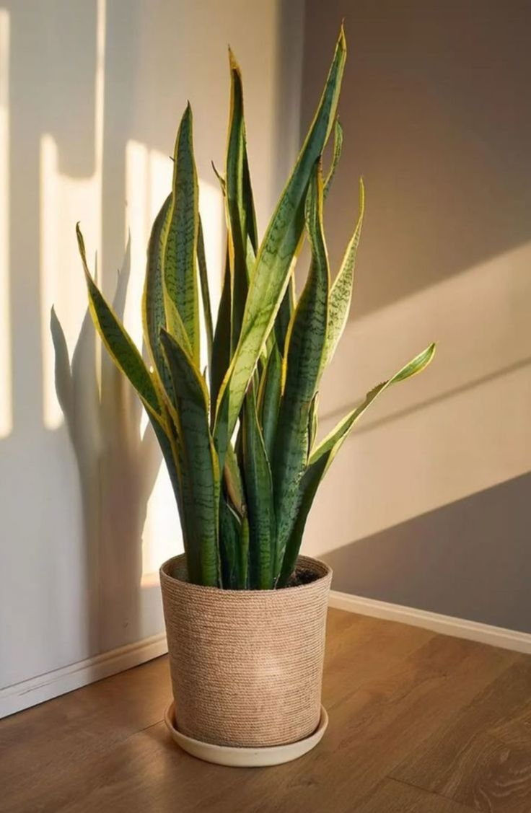
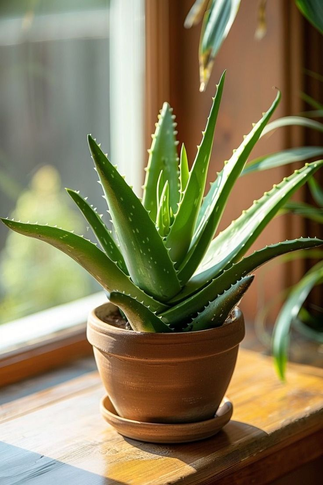

Featured Plants
Snake Plant (Sansevieria trifasciata)
- Care: Tolerates low light, infrequent watering, and neglect.
- Benefit: Filters toxins like formaldehyde and benzene from the air.
- Fun Fact: Releases oxygen at night, making it a great bedroom plant.
- Tip: Water only when soil is completely dry — overwatering is the main killer.

Pothos (Epipremnum aureum)
- Care: Thrives in indirect light and can grow in soil or water.
- Benefit: Known as the “beginner’s plant” because it’s nearly indestructible.
- Fun Fact: Its trailing vines can grow several feet long, perfect for hanging baskets.
- Tip: Trim regularly to encourage bushier growth and prevent legginess.

Peace Lily (Spathiphyllum)
- Care: Prefers medium to low light and weekly watering.
- Benefit: Improves indoor air quality and adds elegance with its white blooms.
- Fun Fact: Peace lilies droop dramatically when thirsty, then perk up after watering.
- Tip: Keep away from pets — leaves can be mildly toxic if ingested.

Aloe Vera
- Care: Needs bright, indirect sunlight and minimal watering.
- Benefit: Gel inside leaves soothes burns and skin irritation.
- Fun Fact: Aloe has been used in traditional medicine for thousands of years.
- Tip: Use a well‑draining potting mix (like cactus soil) to prevent root rot.
